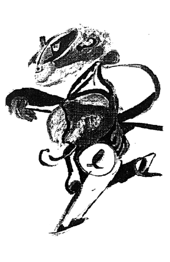

 |
MANUE Gozaba
haciendo sus pinitos literarios; los mimaba, los cuidaba con una dedicación
y una devoción tan grandes que sus viejos estuvieron a punto de
ingresarlo en coma. Al final imperó la paciencia y la sabia presencia
senil de la ancianidad más vieja que Matusalén: reinó
el juicio: no lo hicieron, les daba un nosequé. Cierto día,
siendo él aún un proyecto de ser humano en las mentes de
sus padres, con gran sangre fría decidió hacer algo por
el ayuntamiento: se fué de putas.Volvió como nuevo. |